\( \DeclareMathOperator{\abs}{abs} \newcommand{\ensuremath}[1]{\mbox{$#1$}} \)
Lab sheet 3
| --> | wxplot2d ( 2 · exp ( − t ) · sin ( 30 · t ) , [ t , 0 , 5 ] ) ; |
\[\operatorname{ }\]
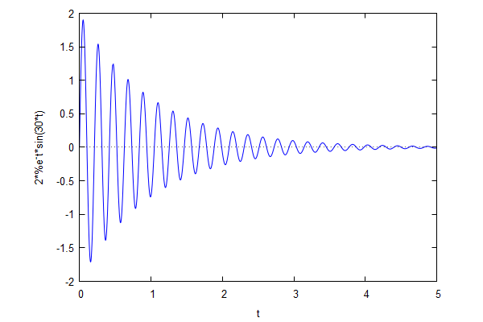
\[\operatorname{ }\]
| --> | wxplot2d ( 2 · sin ( 20 · t ) + 3 · sin ( 21 · t ) , [ t , 0 , 20 ] ) ; |
\[\operatorname{ }\]
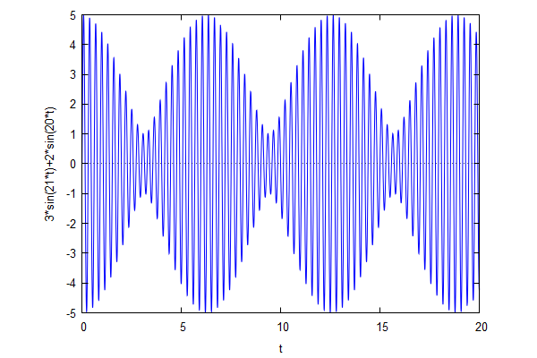
\[\operatorname{ }\]
| --> | wxplot2d ( sin ( x ) + sin ( 3 · x ) / 3 + sin ( 5 · x ) / 5 + sin ( 7 · x ) / 7 , [ x , − 2 · %pi , 2 · %pi ] ) ; |
\[\operatorname{ }\]
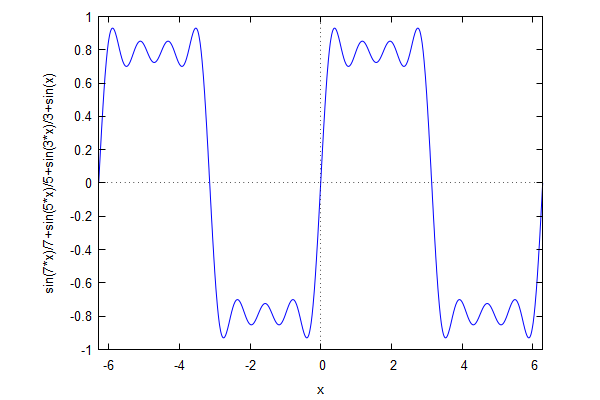
\[\operatorname{ }\]
| --> | wxplot2d ( cos ( %pi · x ^ 2 ) , [ x , − 5 , 5 ] ) ; |
\[\operatorname{ }\]
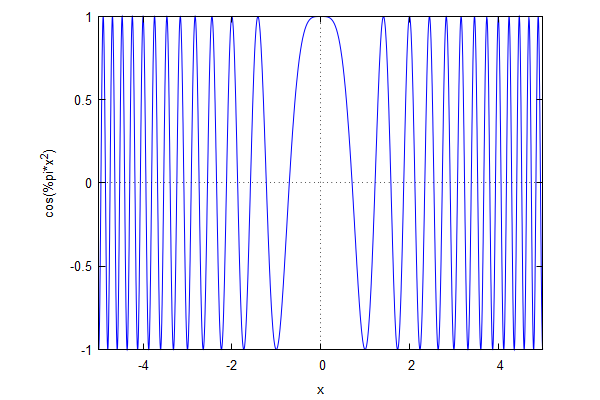
\[\operatorname{ }\]
| --> | f ( x ) : = ( x ^ 3 − x ) · ( x ^ 2 − 4 / 9 ) · ( x ^ 2 − 1 / 9 ) ; |
\[\operatorname{ }\operatorname{f}(x):=\left( {{x}^{3}}-x\right) \, \left( {{x}^{2}}-\frac{4}{9}\right) \, \left( {{x}^{2}}-\frac{1}{9}\right) \]
| --> | wxplot2d ( [ f ( x ) , x ^ 7 ] , [ x , − 5 , 5 ] ) ; |
\[\operatorname{ }\]
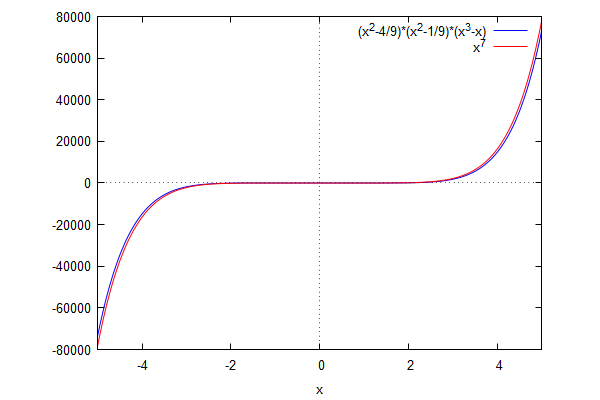
\[\operatorname{ }\]
| --> | wxplot2d ( [ f ( x ) , − 4 / 81 · x ] , [ x , − 0 . 1 , 0 . 1 ] ) ; |
\[\operatorname{ }\]
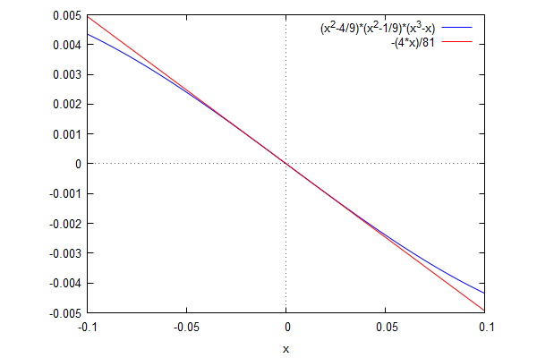
\[\operatorname{ }\]
| --> | g ( x ) : = ( 2 · x + 3 ) / ( 3 · x − 4 ) ; |
\[\operatorname{ }\operatorname{g}(x):=\frac{2 x+3}{3 x-4}\]
| --> | wxplot2d ( [ g ( x ) , 2 / 3 ] , [ x , − 10 , 10 ] , [ y , − 10 , 10 ] ) ; |
\[\]\[plot2d: some values were clipped.\]
\[\operatorname{ }\]
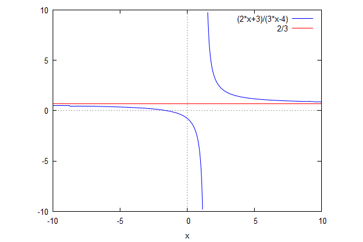
\[\operatorname{ }\]
| --> | [ limit ( g ( x ) , x , inf ) , limit ( g ( x ) , x , minf ) ] ; |
\[\operatorname{ }[\frac{2}{3},\frac{2}{3}]\]
| --> | kill ( g ) $ ; |
| --> | f ( x ) : = ( 1 − exp ( x ) + exp ( 2 · x ) − exp ( 3 · x ) ) / sin ( x ) ; |
\[\operatorname{ }\operatorname{f}(x):=\frac{1-\operatorname{exp}(x)+\operatorname{exp}\left( 2 x\right) -\operatorname{exp}\left( 3 x\right) }{\sin{(x)}}\]
| --> | f ( 0 ) ; |
\[\]\[\mbox{%error expt: undefined: 0 to a negative exponent. }\]\[\mbox{%error \ensuremath{\neq}0: f(x=0) }\]\[\mbox{%error -- an error. To debug this try: debugmode(true);}\]
| --> | limit ( f ( x ) , x , 0 ) ; |
\[\operatorname{ }-2\]
| --> | wxplot2d ( [ f ( x ) , − 2 ] , [ x , − 1 , 1 ] ) ; |
\[\]\[plot2d: expression evaluates to non-numeric value somewhere in plotting range.\]
\[\operatorname{ }\]
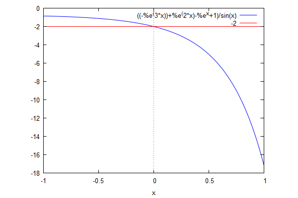
\[\operatorname{ }\]
| --> | kill ( f ) $ ; |
| --> | wxplot2d ( bessel_j ( 2 , x ) , [ x , − 50 , 50 ] ) ; |
\[\operatorname{ }\]
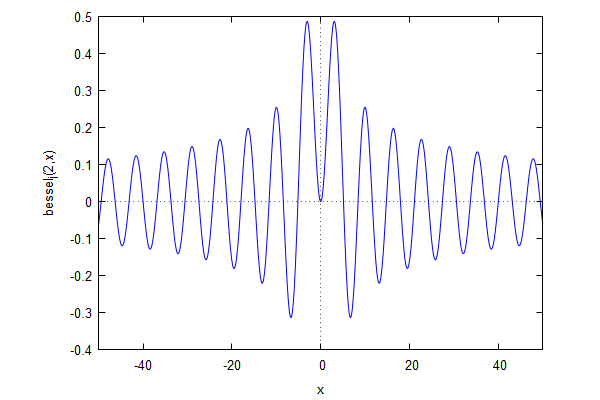
\[\operatorname{ }\]
| --> | wxplot2d ( [ bessel_j ( 2 , x ) , x ^ 2 / 8 ] , [ x , − 0 . 1 , 0 . 1 ] ) ; |
\[\operatorname{ }\]
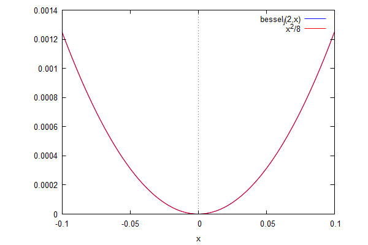
\[\operatorname{ }\]
| --> | wxplot2d ( [ bessel_j ( 2 , x ) , 0 . 8 · x ^ ( − 1 / 2 ) ] , [ x , 10 , 300 ] ) ; |
\[\operatorname{ }\]
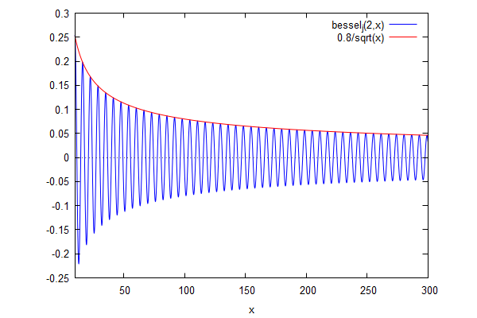
\[\operatorname{ }\]
| --> | wxplot2d ( [ bessel_j ( 2 , x ) , 0 . 8 · x ^ ( − 1 / 2 ) · sin ( x − 2 / 3 · %pi ) ] , [ x , 5 , 100 ] ) ; |
\[\operatorname{ }\]
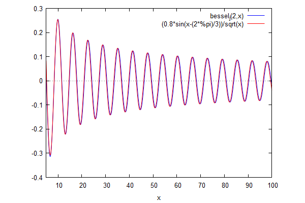
\[\operatorname{ }\]
| --> | g ( a , x ) : = ( x − 1 − sin ( a / 4 ) ) · ( x − 1 − cos ( a / 4 ) ) · ( x + 1 − sin ( a / 4 ) ) · ( x + 1 − cos ( a / 4 ) ) / ( 1 + x ^ 4 ) ; |
\[\operatorname{ }\operatorname{g}\left( a,x\right) :=\frac{\left( x-1-\sin{\left( \frac{a}{4}\right) }\right) \, \left( x-1-\cos{\left( \frac{a}{4}\right) }\right) \, \left( x+1-\sin{\left( \frac{a}{4}\right) }\right) \, \left( x+1-\cos{\left( \frac{a}{4}\right) }\right) }{1+{{x}^{4}}}\]
| --> | wxplot2d ( [ g ( 2 , x ) , g ( 3 , x ) , g ( 4 , x ) ] , [ x , − 500 , 500 ] ) ; |
\[\operatorname{ }\]
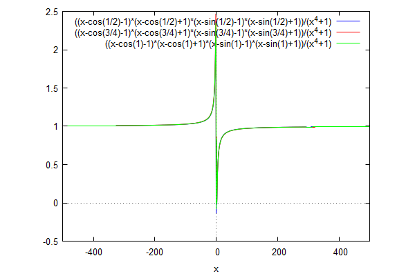
\[\operatorname{ }\]
| --> | wxplot2d ( [ g ( 2 , x ) , g ( 3 , x ) , g ( 4 , x ) ] , [ x , − 2 , 2 ] , [ legend , "2" , "3" , "4" ] ) ; |
\[\operatorname{ }\]
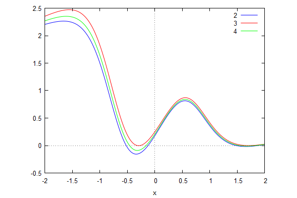
\[\operatorname{ }\]
| --> | wxplot2d ( [ g ( %pi , x ) , 0 ] , [ x , − 0 . 4 , 0 . 2 ] ) ; |
\[\operatorname{ }\]
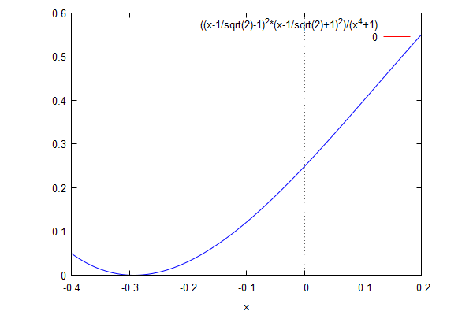
\[\operatorname{ }\]
| --> | y : 1 − 8 · g ( a , 0 ) ; |
\[\operatorname{(y) }1-8 \left( -\cos{\left( \frac{a}{4}\right) }-1\right) \, \left( 1-\cos{\left( \frac{a}{4}\right) }\right) \, \left( -\sin{\left( \frac{a}{4}\right) }-1\right) \, \left( 1-\sin{\left( \frac{a}{4}\right) }\right) \]
| --> | wxplot2d ( [ y , cos ( a ) ] , [ a , − 2 · %pi , 2 · %pi ] ) ; |
\[\operatorname{ }\]
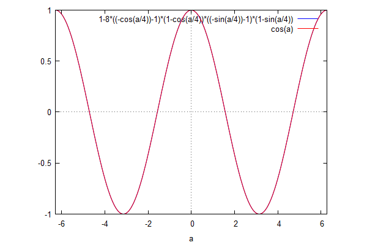
\[\operatorname{ }\]
| --> | wxplot2d ( g ( a , 0 . 5 ) , [ a , − 40 , 40 ] ) ; |
\[\operatorname{ }\]
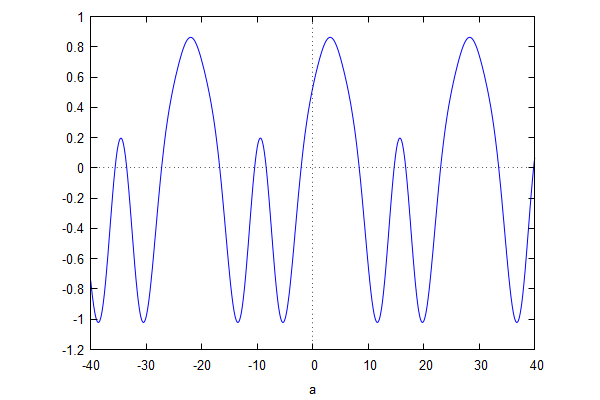
\[\operatorname{ }\]
| --> |
slope
:
diff
(
g
(
a
,
1
/
2
)
,
a
)
$
;
slope : expand ( slope ) , exponentialize $ ; slope : expand ( slope ) , demoivre ; |
\[\operatorname{(slope) }\frac{2 \sin{(a)}}{17}-\frac{3 \sin{\left( \frac{3 a}{4}\right) }}{17}-\frac{3 \cos{\left( \frac{3 a}{4}\right) }}{17}+\frac{4 \cos{\left( \frac{a}{2}\right) }}{17}-\frac{2 \sin{\left( \frac{a}{4}\right) }}{17}+\frac{2 \cos{\left( \frac{a}{4}\right) }}{17}\]
| --> | find_root ( slope , a , 3 , 4 ) ; |
\[\operatorname{ }3.141592653589794\]
| --> | wxplot3d ( g ( a , x ) , [ a , − 20 , 20 ] , [ x , − 15 , 15 ] , [ grid , 100 , 100 ] , [ mesh_lines_color , false ] ) ; |
\[\operatorname{ }\]
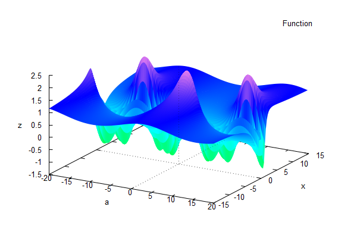
\[\operatorname{ }\]
| --> | kill ( g , y , slope ) $ |
Created with wxMaxima.
The source of this Maxima session can be downloaded here.